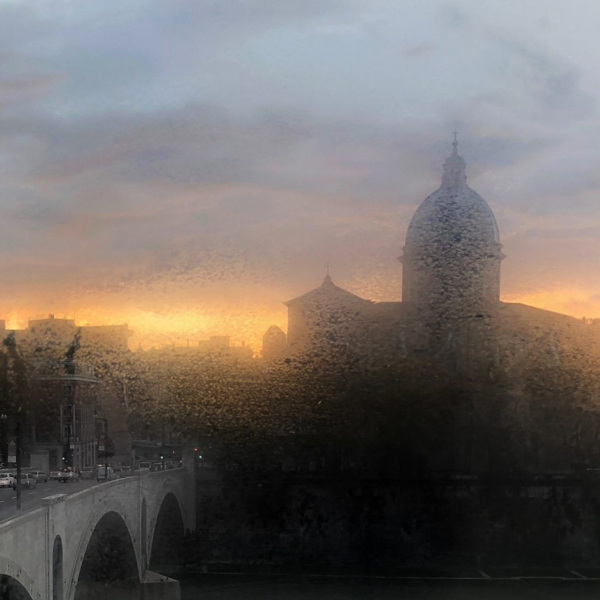

Sunrise in Rome
Every big Italian city has its own patron saint, which is viewed as a protector and is celebrated with local holidays. Knowing about these local holidays in advance can help you to avoid some of the disadvantages caused by the slowing down or closure of some services. The following is a list of the holidays celebrated in the most famous Italian cities:
Naples- San Gennaro: celebrated every year on September 19th.
Bologna- San Petronio: celebrated every year on October 4th.
Rome- Santi Pietro and Paolo: celebrated every year on June 29th.
Milan- Sant’Ambrogio: celebrated every year on December 7th.
Florence, Turin and Genoa- San Giovanni Battista: celebrated every year on June 24th.
Palermo- Santa Rosalia: celebrated every year on July 11th.
Venice- San Marco: celebrated every year on April 25th.
Trieste- San Giusto: celebrated every year on November 3rd
To this list I would also add the Palio di Siena (horse racing), which is not a celebration to honor a saint, but it still is a big event that takes place every year on July 2nd and August 16th.
{This is an excerpt from chapter 13 “Italian holidays” of the eBook “Italy from the Inside. A native Italian reveals the secrets of traveling in Italy”. Buy our eBook on
Amazon and leave us a review! If it’s good, you’ll make us happy, if it’s bad, you’ll make us improve. Thank you either way!}